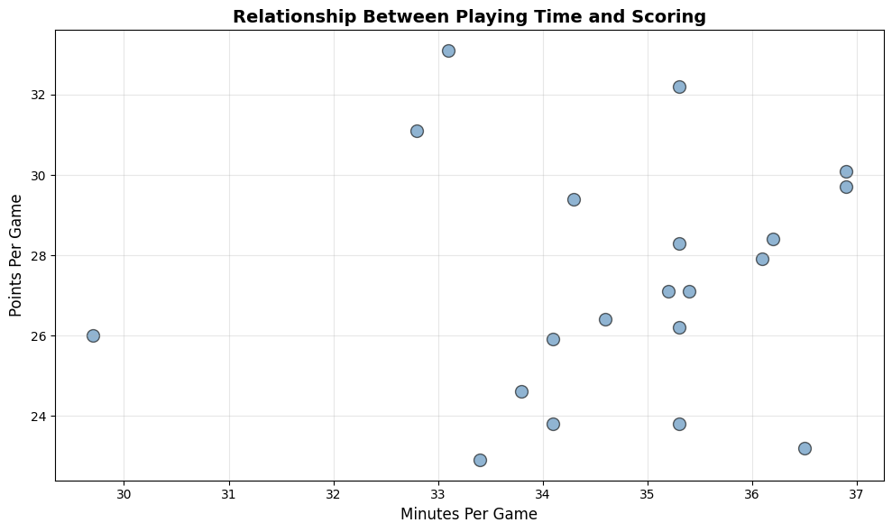
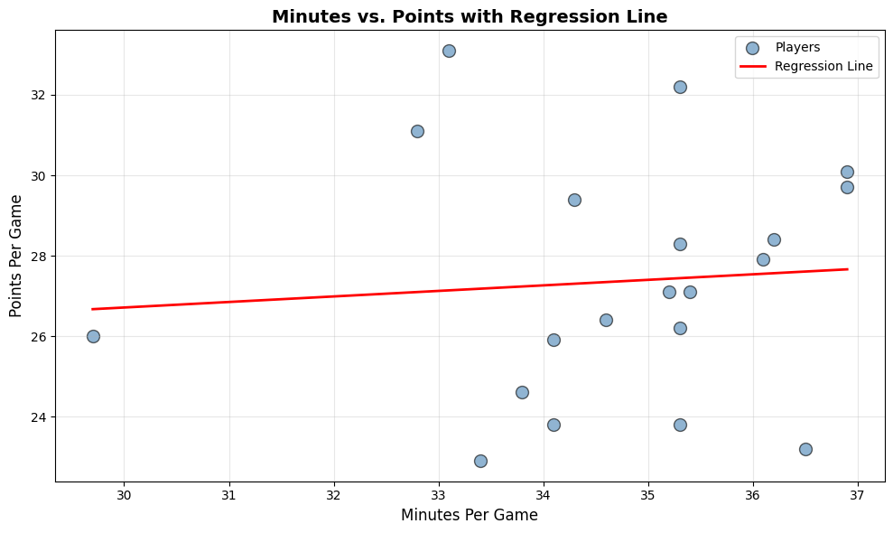

Data Tutorial Blog Project
Scatterplots Made Simple: Minutes Played vs. Points Scored
A beginner-friendly guide to visualizing basketball performance data
Introduction
Have you ever wondered if playing more minutes actually leads to scoring more points in basketball? It seems obvious, but how strong is that relationship? In this tutorial, you’ll learn how to answer questions like this using Python, pandas, and matplotlib.
We’ll work through a complete workflow: - Loading and inspecting player statistics - Cleaning messy data - Creating a professional scatterplot - Adding a regression line to quantify the relationship
By the end, you’ll have a reusable template for exploring correlations in any sport or dataset.
Step 1: Load and Inspect the Data
First, let’s load our basketball statistics and take a quick look at what we’re working with.
import pandas as pd
import matplotlib.pyplot as plt
import numpy as np
# Load the data
df = pd.read_csv('player_stats.csv')
# Display first few rows
print(df.head())Here’s what our dataset looks like:
| Player | Minutes | Points | Rebounds |
|---|---|---|---|
| LeBron James | 35.2 | 27.1 | 7.5 |
| Stephen Curry | 34.3 | 29.4 | 5.2 |
| Kevin Durant | 36.9 | 29.7 | 7.1 |
| Giannis Antetokounmpo | 32.8 | 31.1 | 11.6 |
| Joel Embiid | 33.1 | 33.1 | 10.2 |
Each row represents a player’s per-game averages for the season.
Step 2: Clean and Prepare the Data
Real-world data is rarely perfect. Let’s check for issues and clean our dataset.
# Check for missing values
print(df.isnull().sum())
# Check data types
print(df.dtypes)
# Remove any rows with missing values
df_clean = df.dropna()
# Ensure Minutes and Points are numeric
df_clean['Minutes'] = pd.to_numeric(df_clean['Minutes'], errors='coerce')
df_clean['Points'] = pd.to_numeric(df_clean['Points'], errors='coerce')
# Remove any rows that couldn't be converted to numeric
df_clean = df_clean.dropna()
print(f"Dataset now has {len(df_clean)} complete records") # Output: Dataset now has 20 complete recordsWhy this matters: Missing or incorrectly formatted data can cause errors or misleading visualizations. Always inspect and clean your data before analysis.
Step 3: Create the Scatterplot
Now for the fun part—visualizing the relationship between minutes played and points scored.
# Create figure and axis
plt.figure(figsize=(10, 6))
# Create scatterplot
plt.scatter(df_clean['Minutes'], df_clean['Points'],
alpha=0.6, s=100, color='steelblue', edgecolors='black')
# Add labels and title
plt.xlabel('Minutes Per Game', fontsize=12)
plt.ylabel('Points Per Game', fontsize=12)
plt.title('Relationship Between Playing Time and Scoring', fontsize=14, fontweight='bold')
# Add grid for readability
plt.grid(True, alpha=0.3)
plt.tight_layout()
plt.show()Here’s what the visualization looks like:

This scatterplot makes the positive relationship immediately visible—players who log more minutes tend to score more points.
Step 4: Quantify the Relationship with Linear Regression
Let’s fit a regression line to quantify exactly how minutes relate to points.
# Compute slope and intercept using NumPy
x = df_clean['Minutes'].to_numpy()
y = df_clean['Points'].to_numpy()
# Calculate slope (m) and intercept (b) using least squares
slope, intercept = np.polyfit(x, y, 1)
# Compute predicted values for regression line
line_x = np.array([x.min(), x.max()])
line_y = slope * line_x + intercept
# Compute R² manually
y_pred = slope * x + intercept
ss_res = np.sum((y - y_pred) ** 2)
ss_tot = np.sum((y - np.mean(y)) ** 2)
r_squared = 1 - (ss_res / ss_tot)
# Plot scatterplot with regression line
plt.figure(figsize=(10, 6))
plt.scatter(x, y, alpha=0.6, s=100, color='steelblue', edgecolors='black', label='Players')
plt.plot(line_x, line_y, color='red', linewidth=2, label='Regression Line')
plt.xlabel('Minutes Per Game', fontsize=12)
plt.ylabel('Points Per Game', fontsize=12)
plt.title('Minutes vs. Points with Regression Line', fontsize=14, fontweight='bold')
plt.legend()
plt.grid(True, alpha=0.3)
plt.tight_layout()
plt.show()
# Display the equation and R²
print(f"Regression equation: Points = {intercept:.2f} + {slope:.2f} × Minutes") # Output: Regression equation: Points = 22.58 + 0.14 × Minutes
print(f"R² = {r_squared:.3f}") # Output: R² = 0.006
The regression line helps us quantify this relationship precisely.
Understanding the Results
Our regression equation is:
\[\text{Points} = \beta_0 + \beta_1 \cdot \text{Minutes}\]
Where: - \(\beta_0\) (intercept) represents the baseline points when minutes = 0 - \(\beta_1\) (slope) tells us how many additional points we expect per additional minute played
For example, if our equation is:
\[\text{Points} = -5.23 + 1.02 \cdot \text{Minutes}\]
This means each additional minute played is associated with approximately 1.02 more points per game.
The \(R^2\) value tells us what percentage of the variation in points can be explained by minutes played. An \(R^2\) of 0.65 means minutes explain 65% of the scoring variation.
Conclusion: Your Turn to Explore
Congratulations! You’ve just completed a full data analysis workflow:
✅ Loaded and inspected real data
✅ Cleaned and prepared it for analysis
✅ Created a professional visualization
✅ Quantified relationships with linear regression
Call to Action
Try this yourself: Clone this GitHub repository and run the Jupyter notebook. Then, modify the code to explore different relationships:
- Hockey fans: Download NHL data and analyze shots vs. goals
- Soccer enthusiasts: Explore assists vs. goals scored
- Baseball lovers: Investigate at-bats vs. home runs
Have fun experimenting, and share your results with others, myself included!
Want to go deeper? Check out these resources: - Pandas documentation on data cleaning - Matplotlib gallery for plot inspiration - Understanding correlation vs. causation
Happy analyzing! 📊🏀
Published on October 24, 2025 | Walter Vogelmann